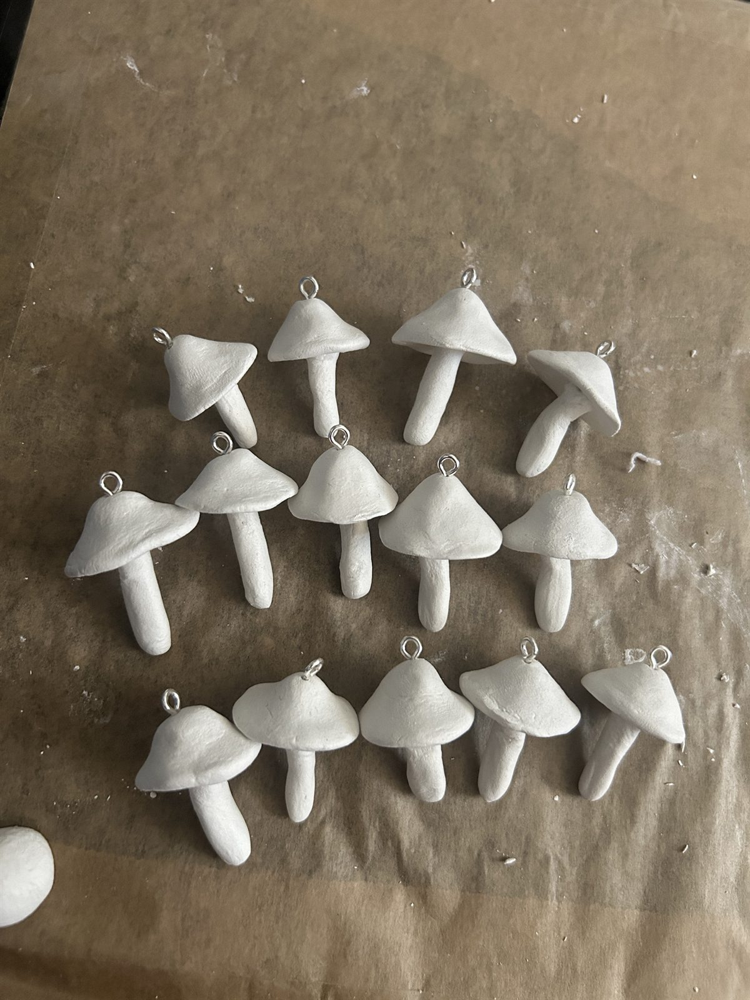
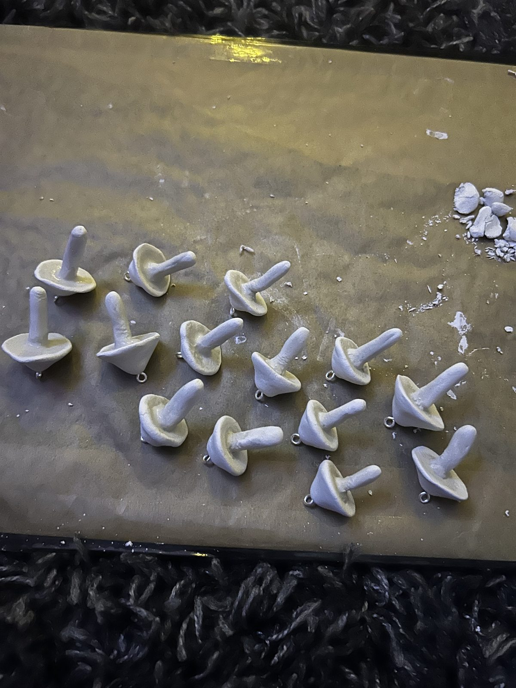
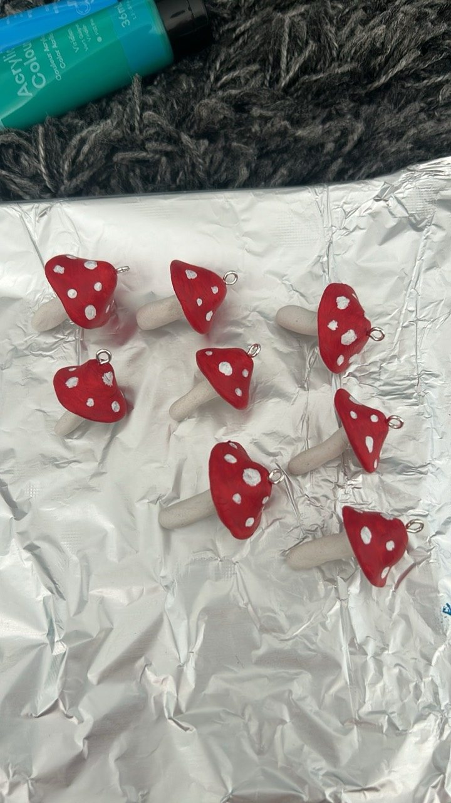
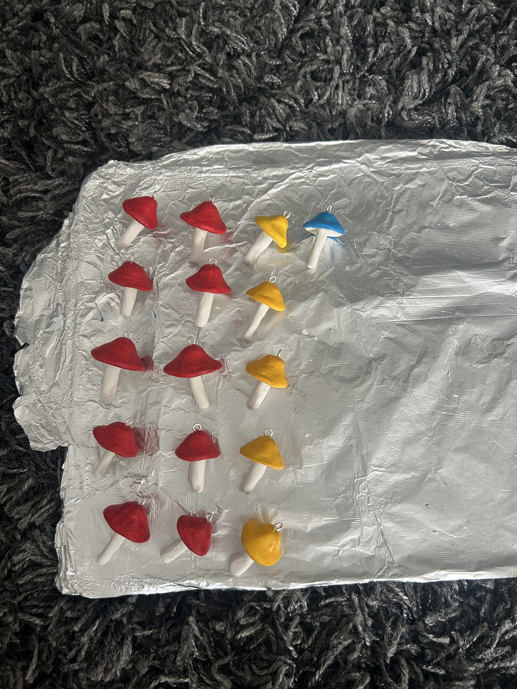
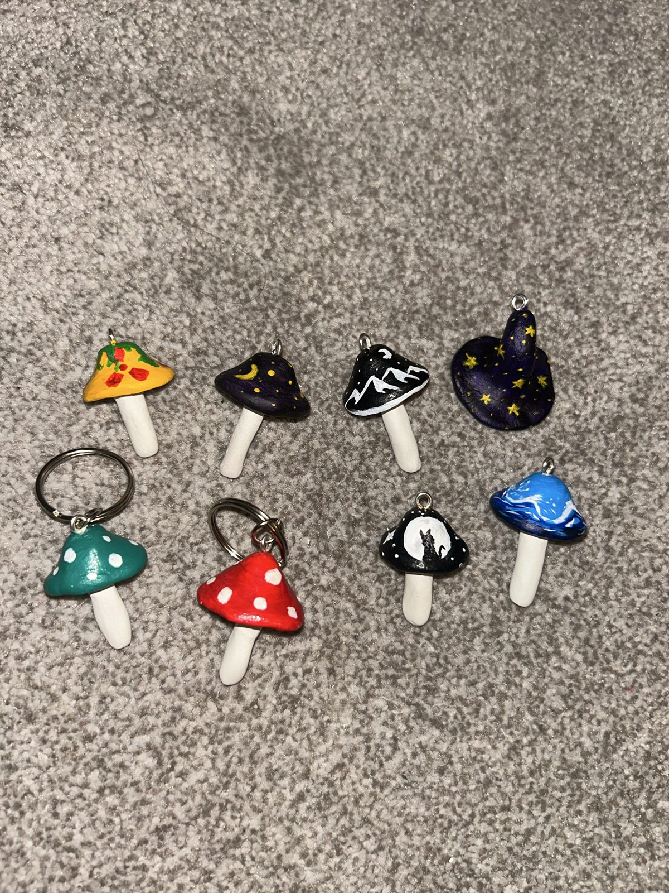
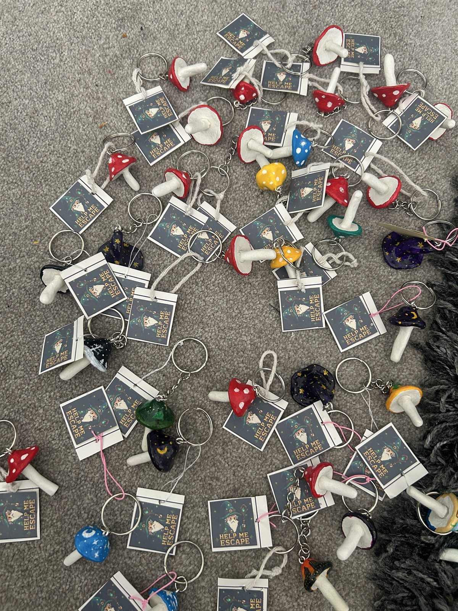

A note from me
About Me
Hi, I’m Danny.
Thank you so much for playing and I really hope you enjoyed! I started this project about a month ago and it’s been the best side quest I’ve done to date. I’ve been scripting and coding for a while, but this was the first sort of thing I’ve done like this. I love building connections with people, so bringing my vibe and imagination to the citizens of Boomtown has been amazing.






I’m also a singer-songwriter and producer. My music is soft rock/pop (even though I’m handing out links to this website at a drum and bass/electronic music festival lol). I’ve been looking for ways to expand my horizons in the music industry in recent times. Below are a few of my recent demos from home, just snippets of the real thing. I’d be so grateful if you were to have a listen to a few, and then let me know if you like any and your favourite ones that you could see potential in. I’m linking my contacts below, so I’d love to hear some feedback!
And if you do happen to be familiar with any faces within this industry, I’m looking to hopefully one day soon connect with a mixing or mastering engineer (or both) and another producer. A point in the right direction, or a slight word of mouth about common interests, would make my day 😅
I really hope to hear back from some of you. Thank you so much again for playing. Have the best Boomtownnnnnn 🥳🥳🕺🕺🪩🪩